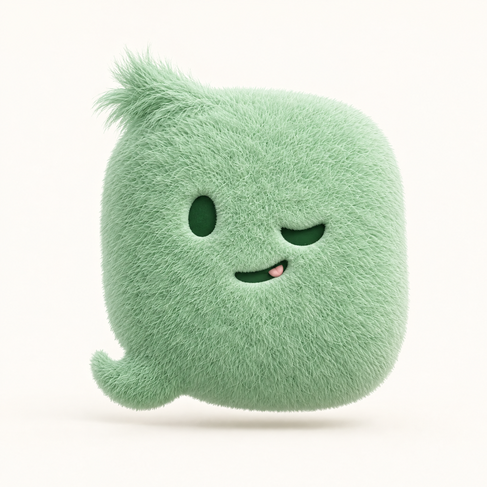
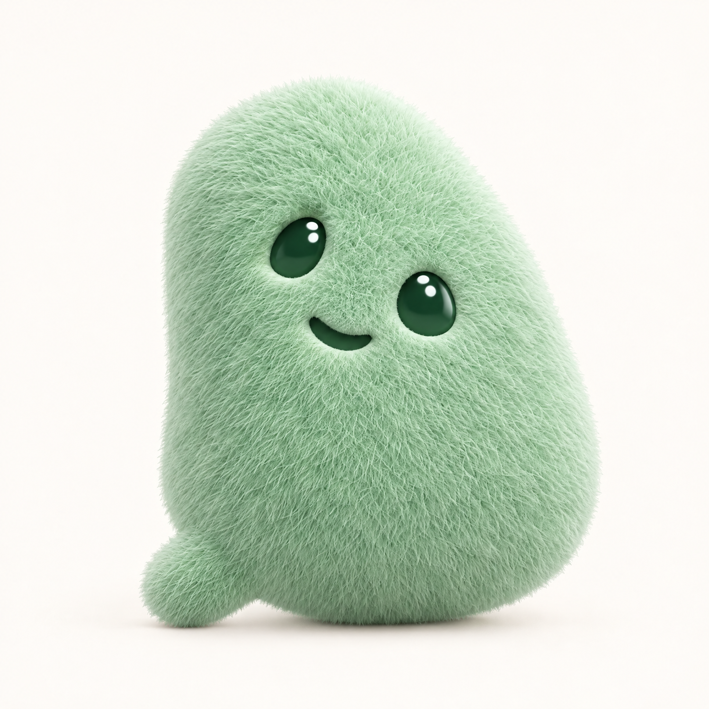
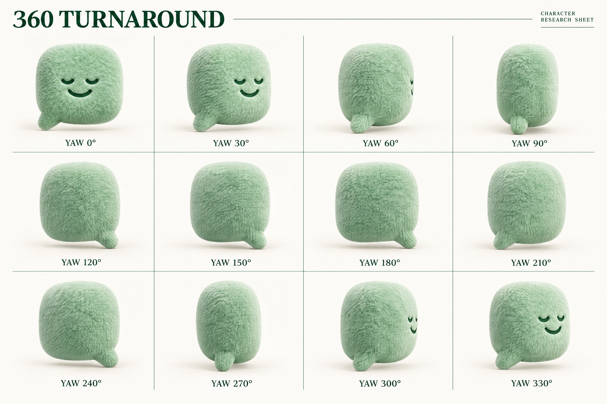
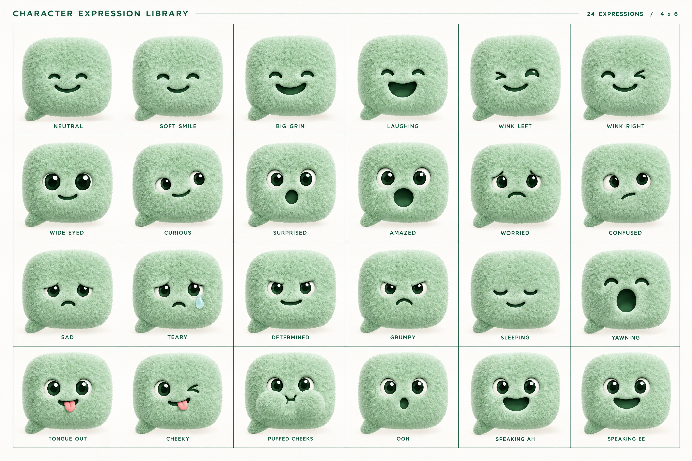
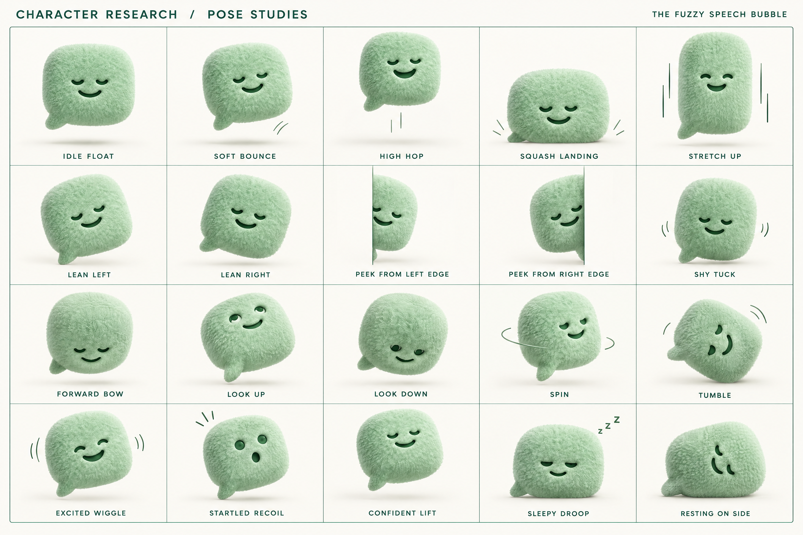
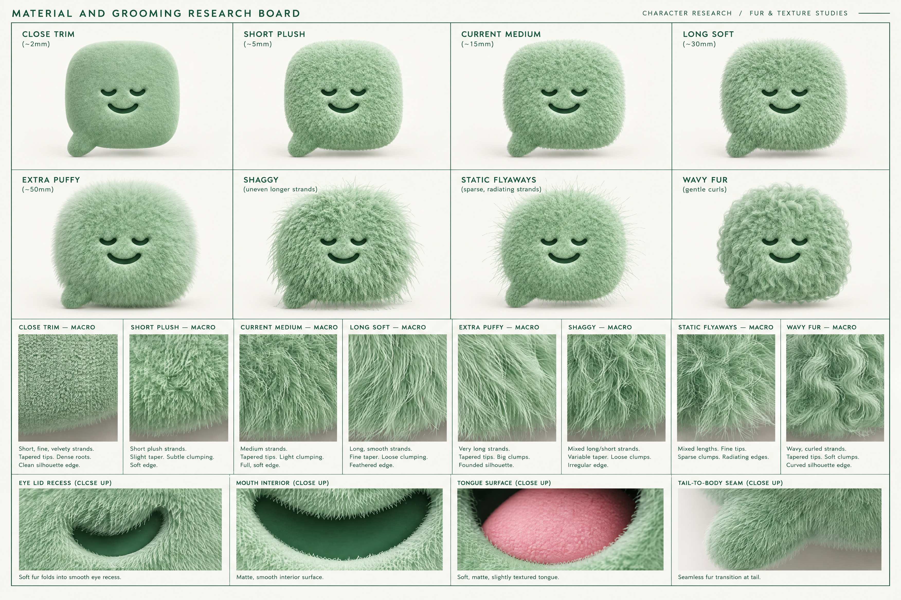
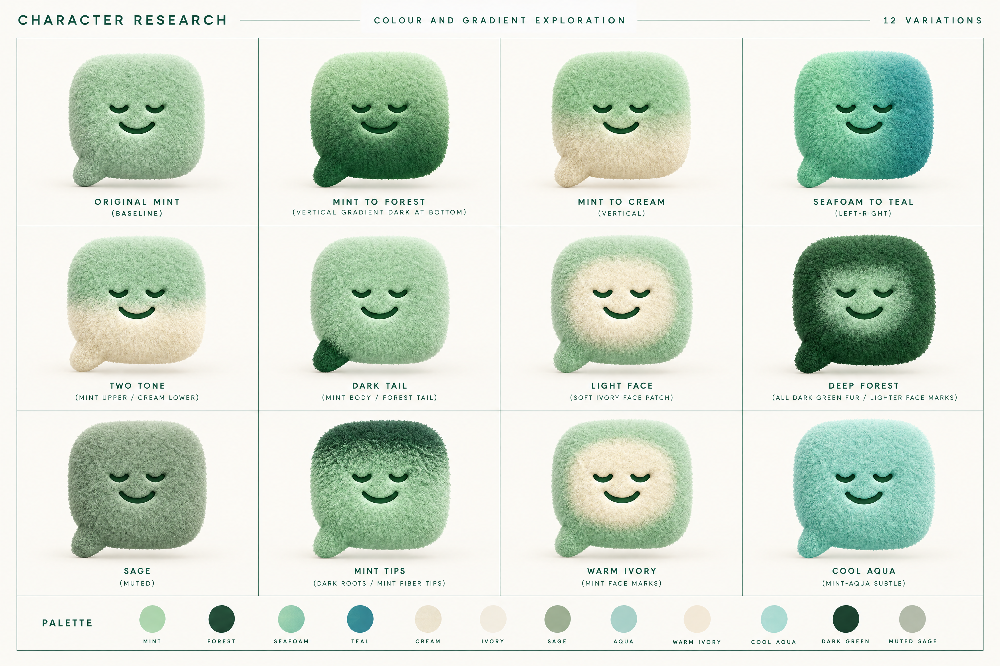
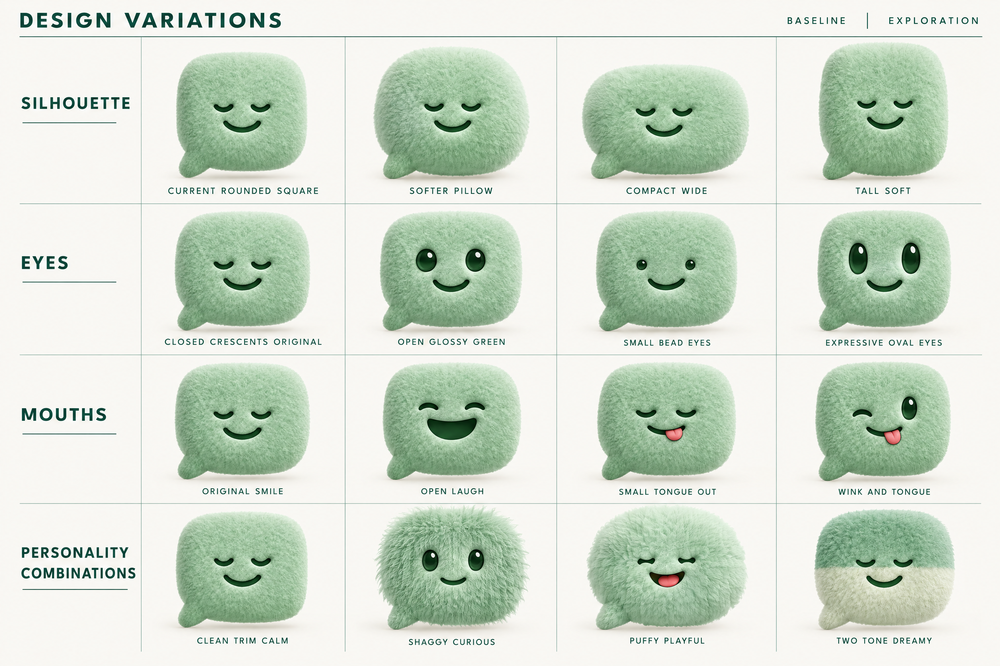
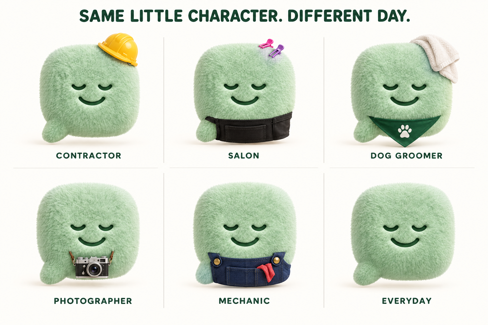
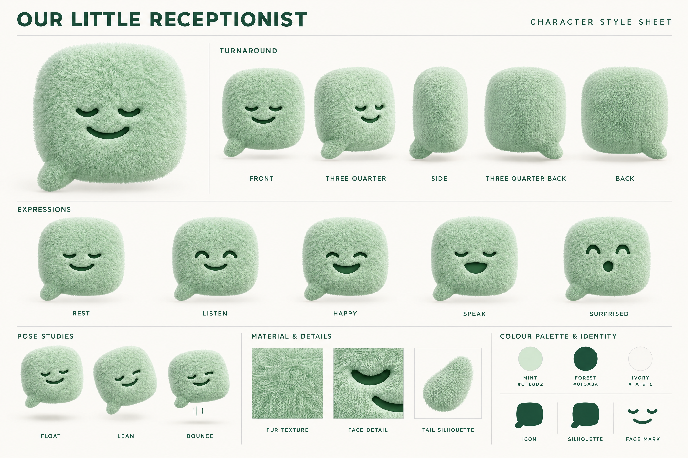

The full character exploration.
Turnarounds, expressions, poses, fur and material studies, colour variations, alternate designs and industry costumes. Generated from the website mascot with GPT Image 2.5.
A little more personality.
Two original-mint directions, using shape, fur and expression.

01 · Little mischief
An unruly tuft, curled tail and cheeky wink. A playful little troublemaker.

02 · Curious companion
A softer, lopsided body, glossy eyes and curious lean. Warm and attentive.
360° turnaround
Twelve orientation studies around the character, including both profiles and the rear. These are drawn rotation references; exact geometry will be locked in the animation model.

Click to inspect at full resolution.Download this sheet ↓24 expressions
Open eyes, closed eyes, left and right winks, tongue out, cheeky, sleeping, yawning, worried, surprised, laughing and speaking mouth shapes.

Click to inspect at full resolution.Download this sheet ↓20 pose studies
Float, bounce, hop, squash, stretch, lean, peek, bow, look up and down, spin, tumble, recoil, droop and rest.

Click to inspect at full resolution.Download this sheet ↓Fur, materials and details
Eight treatments from close-trimmed to extra-puffy, shaggy, flyaway and wavy. Macro studies show strands and edges, plus eye recess, mouth, tongue and tail details. Length labels are visual direction targets.

Click to inspect at full resolution.Download this sheet ↓Colour, gradients and two-tone variations
Twelve colour studies explore mint-to-forest, mint-to-cream, two-tone fur, darker tails, face patches, darker roots and lighter tips.

Click to inspect at full resolution.Download this sheet ↓Shape, eyes, mouth and personality
Sixteen variations explore body proportions, eye styles, tongue and mouth designs, plus combinations of longer fur, colour and expression.

Click to inspect at full resolution.Download this sheet ↓Industry clothing and costumes
The tiny tilted hard hat, salon clips and apron, grooming towel and bandana, camera and mechanic overalls remain in the pack.

Click to inspect at full resolution.Download this sheet ↓Original identity and palette
The website mascot remains the baseline. The studies above explore possibilities; none automatically replaces the brand character.

Click to inspect at full resolution.Download this sheet ↓